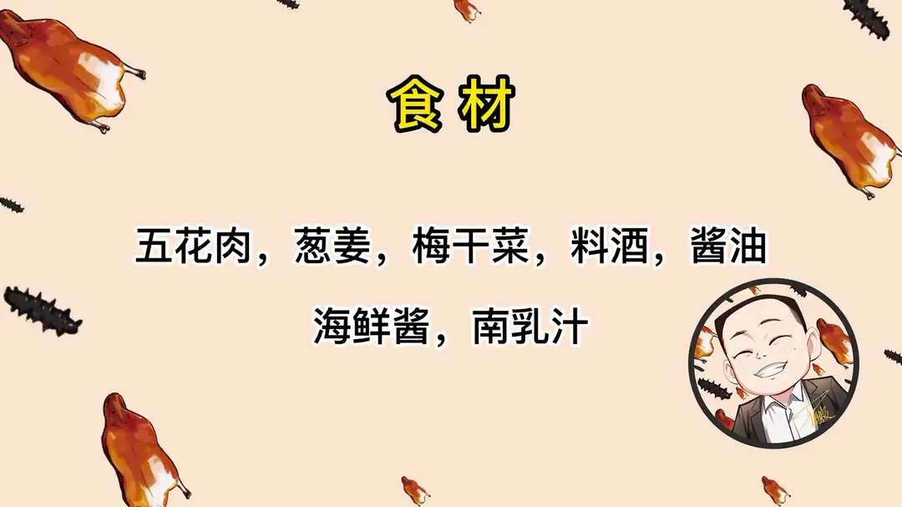
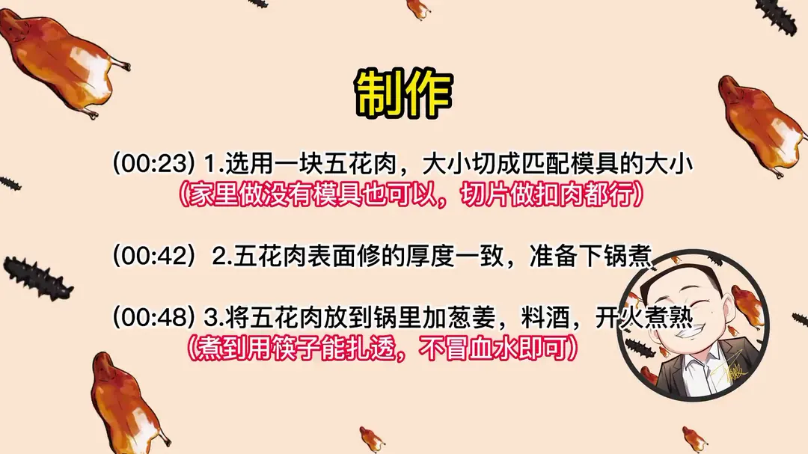
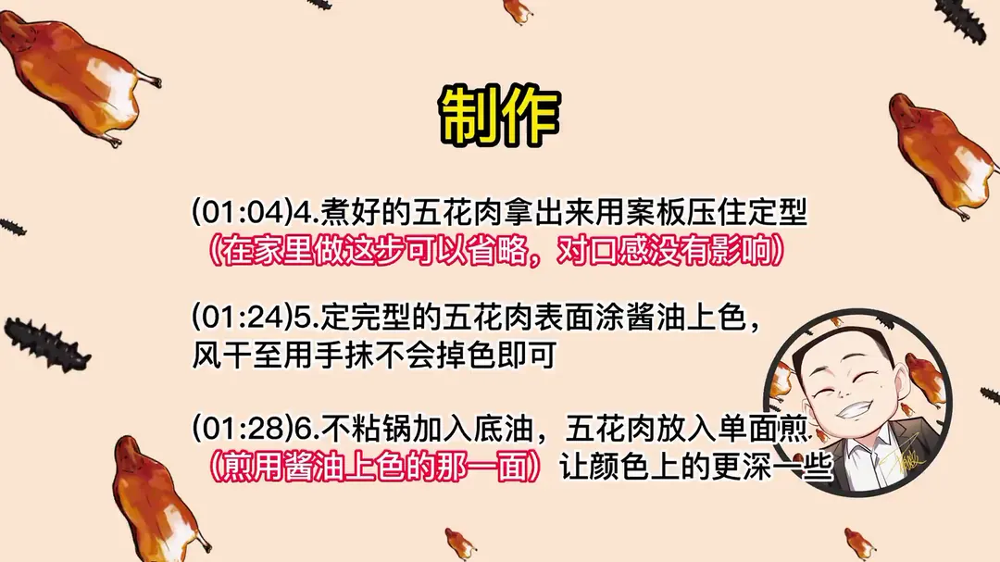
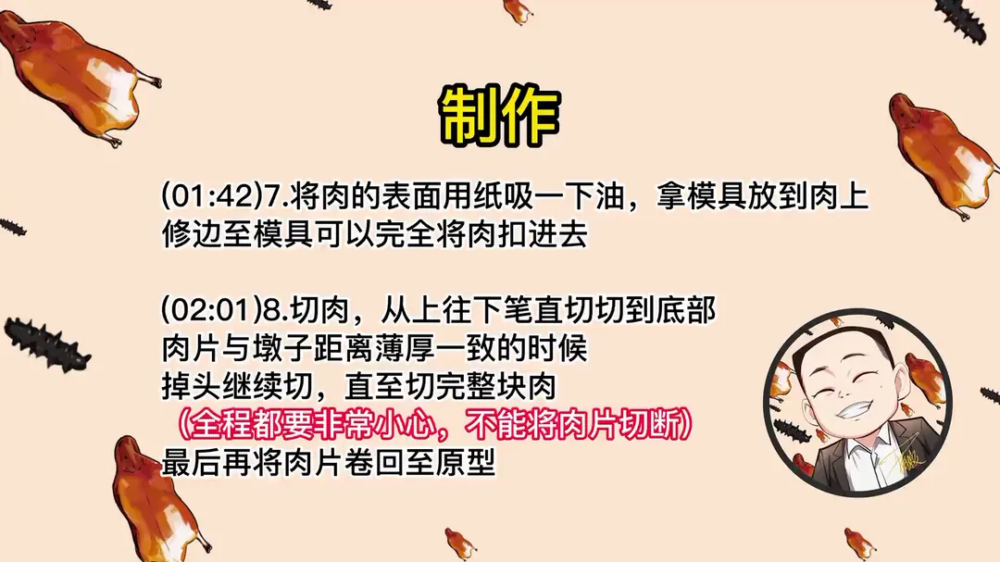
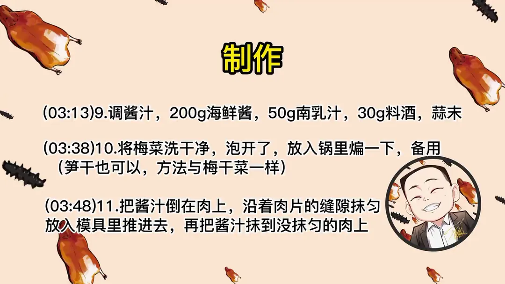
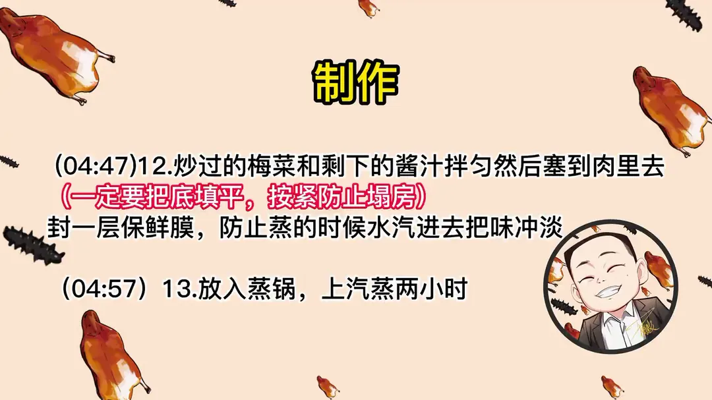

宝塔肉
隋卞一做。五花肉煮熟压型、涂酱油煎上色，用模具修边切片再卷回成塔，抹上 200g 海鲜酱与 50g 南乳汁调的酱汁，塞进炒过的梅干菜，上汽蒸两小时。
原视频：https://www.bilibili.com/video/BV1yY4y1C7di
食材
五花肉、葱姜、梅干菜 等 7 样
| 类别 | 用料 | 用量 |
|---|---|---|
| 主料 | 五花肉 | 一块 |
| 主料 | 葱姜 | 适量 |
| 调料 | 料酒 | 30g |
| 调料 | 酱油 | 适量 |
| 调料 | 海鲜酱 | 200g |
| 调料 | 南乳汁 | 50g |
| 配菜 | 梅干菜 | 适量 |
步骤
- 切块修型：选一块五花肉，大小切成匹配模具的大小，家里做没有模具也可以，切片做扣肉都行；表面修的厚度一致，准备下锅煮。
- 煮肉：五花肉放锅里加葱姜、料酒，开火煮熟，煮到用筷子能扎透、不冒血水即可。
- 压型：煮好的五花肉拿出来用案板压住定型，在家里做这一步可以省略，对口感没有影响。
- 上色煎制：定完型的五花肉表面涂酱油上色，风干至用手抹不会掉色；不粘锅加底油，五花肉放入单面煎，煎用酱油上色的那一面，让颜色上的更深一些。
- 修边入模：把肉的表面用纸吸一下油，拿模具放到肉上，修边至模具可以完全将肉扣进去。
- 切片卷回：切肉，从上往下笔直切切到底部，肉片与墩子距离薄厚一致时掉头继续切，直至切完整块肉，全程都要非常小心，不能将肉片切断，最后将肉片卷回至原型。
- 调酱与梅菜：调酱汁，200g 海鲜酱、50g 南乳汁、30g 料酒、蒜末；梅菜洗净、泡开，放入锅里煸一下备用，笋干也可以，方法与梅干菜一样。
- 抹酱塞菜：把酱汁倒在肉上，沿着肉片的缝隙抹匀，放入模具里推过去，再把酱汁抹到没抹匀的肉上；炒过的梅菜和剩下的酱汁拌匀，塞到肉里去，一定要把底填平、按紧防止塌房。
- 蒸制：封一层保鲜膜，防止蒸的时候水汽进去把味冲淡，放入蒸锅，上汽蒸两小时。
讲解要点
难度：★★★★★（切开容易，难在切而不断：一刀从头到尾笔直切完还不能切断，是纯手艺活）
为什么这么做
- 只取五花肉中间那块：上面那块太肥，做出来腻口，中间层肥瘦相间、薄厚均匀，才好卷成塔。
- 先煮再定型：煮定形后肉变硬，切片时不容易撕烂；家里嫌麻烦可以省，对口感没有影响，只是切起来更方便。表面要修平、煮到筷子能扎透不冒血，但不能煮得太烂，太烂一切就碎。
- 涂酱油后风干再煎：风干到手抹不掉色，煎的时候颜色才深而均匀；只煎上色的那一面就够。
- 用模具修边、切片后再卷回原型：修边是为了能整块扣进模具，卷回原型才能在蒸制时保持塔形。
- 200g 海鲜酱加 50g 南乳汁、30g 料酒、蒜末：海鲜酱给甜咸底味，南乳汁上色并增加复合香味，料酒把酱稀释到能顺着肉缝往下淌。
- 酱要塞进肉缝、梅菜拌酱填满按紧：汁能顺着缝隙渗进每一层，蒸出来里外才是同一个味道；底不填平按紧，蒸完就塌。
- 封保鲜膜蒸两小时：封住后肉吸的是酱汁的味，不会吸到蒸锅的哈气水；蒸足两小时，油被蒸出来，肉呈半透明红色、入口即化，味道彻底进到每一层。
容易翻车
- 切片时上下要笔直，稍微偏一点问题不大，可一旦切断，整块就不成型了。
- 别切太薄，太薄蒸完没有口感。
- 家里没有模具不要紧：这份酱料本来就是扣肉的配方，直接切厚片拌酱蒸也一样好吃。
原片尾卡






原片文案
AI 字幕校准稿
今天和平饭店同款的宝塔肉来了。他这个菜不是很好吃，工艺可能就错了，里边都是白的。这个菜是怎么切的呀？我教你们，可能比他的好吃一点。
要选用猪的五花肉。小李同志买了这么大一块，上面这块五花肉比较肥，就不用它了，就选中间这块做宝塔肉。得有这么一个家伙（模具），跟肉的大小匹配得差不多就行。家里边没有这个模具的也不用担心，这个酱料的配方本身就是一个做扣肉的配方，不做出这种形状，肉也没问题，切片也没有问题，也挺好吃的。
表面要稍微修一下，让它基本薄厚一致，就可以放在锅里煮了。放在锅里边煮，加点葱姜、料酒，开火直接给它煮熟。咱们只用肉，不用焯水。煮到拿筷子扎透了之后不冒血就熟了，不用煮得特别烂。
为了规矩，还要给它定一下型：需要两块板给它压上，然后拿盆装上点水之类的，凉了之后就会定型。这一步如果嫌麻烦，在家里真的可以忽略掉，它对口感是没有影响的，只不过是切的时候更方便一些。
凉了之后上面要涂点酱油，主要是为了上色。找一个不粘锅，里边加点底油，五花肉煎上色就行了，就这么快，煎单面就可以。然后还要继续改刀，把上面的油蘸一蘸，拿过模具来，把四边全都修一下，稍微小一点，能搁进去就行。
要从上往下切，切得要直，到下边跟墩子的距离一致，一直切断。肉片薄厚一致的时候就要调过头来，这边继续。千万注意，一定要留神，一不留神就切断了。我觉得薄了，太薄了吃没有口感。从头到尾都要小心，一旦切断，它就不成型了，都得上下笔直，稍微偏一点还问题不大。这是个慢活。费劲巴拉切完了，最后把肉片卷回原来的形状。
下面调个酱汁：200 克海鲜酱，来上 50 克南乳汁，南乳汁一个是上色，再就是增加一个复合的香味。酱有点稠，用 30 克左右的料酒稍微稀释一下，再放点蒜末。梅菜要洗干净，泡开了之后搁锅里煸一下。
肉一定要扒开点缝，把汁浇在上面，拿筷子顺着那个缝往下淌，然后把缝全都扒开，让酱汁全下去，这样蒸出来的肉里外才是一个味儿——我猜和平饭店就是在这上头吃了亏。然后把它放到模具里边，推下去，一层一层的。推完之后中间可能还有没沾到酱的地方，再把酱汁补一部分。
把炒过的梅菜倒到酱里拌一下，塞到肉里边，你得把这个底填平，一定要按紧了，等会儿这块肉就塌了。上面铺一层保鲜膜，为什么呢？蒸的时候肉吸酱汁的味道，不会吸哈气水；如果封了的话，有哈气水进去了，会把酱汁的味冲淡。
把蒸锅做上，然后把这肉放进去，盖上盖，上汽之后蒸两个小时。蒸一个小时就能熟，你愿意吃烂一点就多蒸一会儿。
宝塔肉蒸的时间到了，开盖。先开保鲜膜。肉完全化了，因为蒸得足够透，而且是在一个很密封的环境里，油全部都给蒸出来了，现在呈半透明红色。梅菜的香味好香，里面外面的味是一模一样的。里面放的梅菜一定要和酱汁拌匀，稀稠合适，它才会顺着肉缝渗进去，每一层都是一样的味道，这是必须遵循的原则。所以我说他那个有问题，我的做法是没有问题的。
如果观众朋友们在家做，也不用非得切成这个形状，同样的方法去蒸，味道也一样。这只是一个形状，直接切成大厚片，拌完蒸就行了，没有问题。今天我们主要是想装一下，大家一定要在家里学，很好吃。